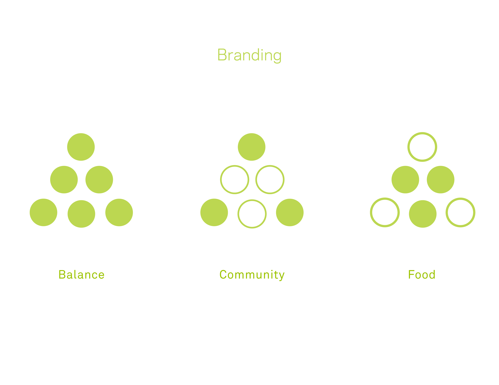
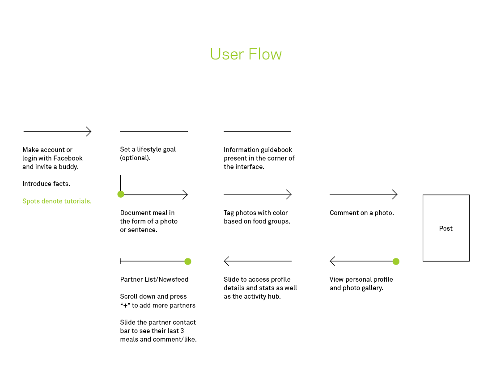
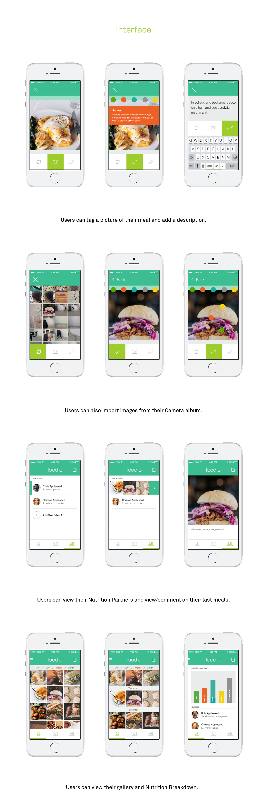

Foodio
Digital, UI/UX
Seeing and being aware of what you eat is a big step in eating healthier overall. Foodio – a combination of "Food Studio" is a mobile application that aims to motivate young individuals to easily keep track of their food choices in a personal, low pressure environment. The target audience consists of individuals who are familiar with social networking, who take their diet seriously and who live generally busy lives and need a low maintenance way to improve their lifestyle.
The main features of Foodio include the Camera, Partners List, Newsfeed and the Statistics Page. In order to help users keep track of balancing their diet, food tags are organized by nutritional group.
Collaborative project with Cathy Lee, Josh Inch, HyunJey Kim and Chuya Lee. I was given the task of ensuring consistent visual identity across all the pages and precision behind the interactions.



